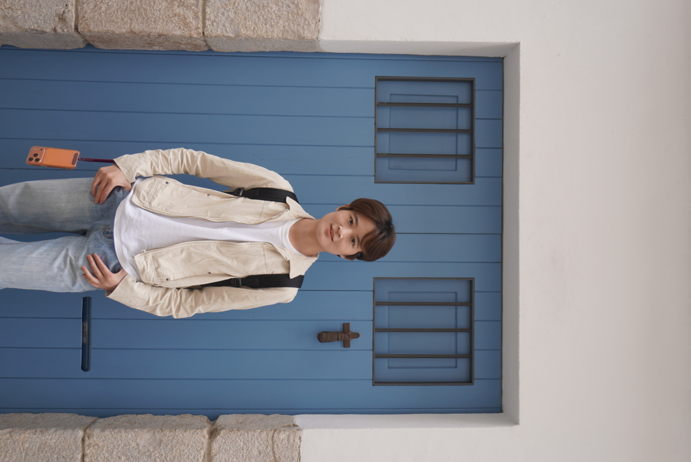

Open to Research Opportunities
Xinyao Zhang 张欣瑶
Tsinghua University · THU-CVML
Beijing, China
xinyao-z24@mails.tsinghua.edu.cn
I am a 2nd-year Master's student at Tsinghua University (Bio3 program, Precision Medicine and Public Health), affiliated with the Computer Vision and Machine Learning Lab (THU-CVML). My research focuses on generative visual models, instruction-guided video editing, and visual place recognition. I am currently an intern at ByteDance Douyin. Previously, I was a research intern at Baidu's Digital Human and Video Generation Group until 2026.6, working on video generation and controllable generation.

Xinyao Zhang
M.S. Student @ Tsinghua · Intern @ ByteDance Douyin
3
Papers
2
First-Author
210⭐
GitHub Stars
CCF-A
Best Venue
📌 Featured Project
SAMA: Factorized Semantic Anchoring and Motion Alignment for Instruction-Guided Video Editing
ECCV 2026 · Co-first author · Instruction-guided video editing with released code, model, and dataset meta.
01
Research Interests
Instruction-Guided Video Editing
Building diffusion-based models that faithfully follow text instructions while preserving temporal consistency and motion dynamics across video frames.
Generative Visual Models
Exploring controllable generation, semantic disentanglement, and unified generation frameworks for images and videos using latent diffusion models.
Visual Place Recognition
Designing compact, discriminative global image descriptors for robot localization, with a focus on cross-domain generalization and efficient feature aggregation.
02
Publications
03
Education
清
Tsinghua University
M.S. in Precision Medicine & Public Health (Bio3) · THU-CVML Lab · Supervisor: Prof. Chun Yuan
2024 – Present
青
Qingdao University
B.S. in Applied Statistics (Mathematics) · GPA Top of Department · First student admitted to Tsinghua via recommendation
2020 – 2024
04
Skills & Tools
Deep Learning Frameworks
PyTorch
PaddlePaddle
Diffusers
Transformers
DiffSynth
Research Focus
Diffusion Models
Video Generation
Video Editing
Image Retrieval
Feature Aggregation
Engineering
Multi-GPU Training
Model Fine-tuning
Ablation Study
Result Visualization
HuggingFace Hub
Programming & Math
Python
C++ (OI)
Statistics
Linear Algebra
Probability Theory
05
Experience & Awards
字节
Intern · ByteDance Douyin
Douyin · Generative Visual Algorithm Research
2026.6 – Present
百度
Research Intern · Baidu Inc
Digital Human & Video Generation Group · Generative Visual Algorithm Research · Video editing, controllable generation, unified generation frameworks, post-training on Wan series models
2025 – 2026.6
🏆
Honors & Awards
Provincial 2nd Prize (NOIP) · National-level Algorithm & Modeling Competition Awards · Outstanding Graduate (Qingdao University) · Top Academic Award (President's Scholarship) · Learning Model Award
2016 – 2024